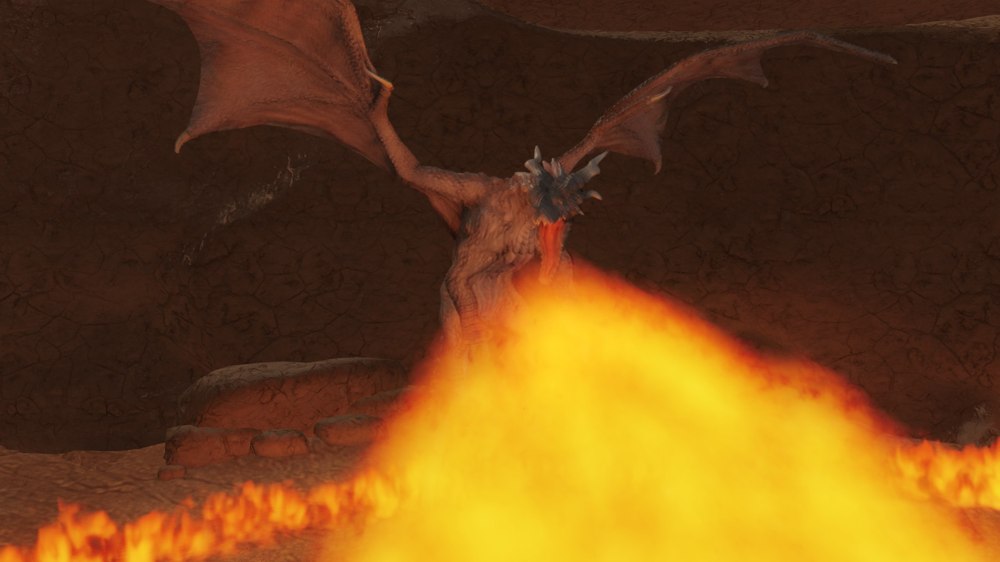

02
C++17 / DirectX 11 / Wwise / 個人制作
Resonance Hunt
- 制作状況
- 完成
- ジャンル
- 3Dリズムアクション
- 開発環境
- C++17 / DirectX 11 / Wwise
- 制作情報
- 個人制作 / 開発期間1か月
剣による攻撃と回避で巨竜「残火の王」の討伐を目指す3Dリズムアクション。コンボやジャスト回避で共鳴をため、お手本のリズムを再現する反撃「反奏」につなげます。
Promotion Video
ゲームPV
01 / Wwise & Beat Sync
音楽に合わせた入力判定とリズムUI
反奏では、聴こえる音楽と入力のタイミング、画面の合図を結びつける必要があります。Wwiseの拍通知を固定長キューに入れ、メインスレッドで取り出して拍時計を更新。入力判定と、タイミングを示す収束リングが同じ時計を参照する構成にしました。
- 01Wwiseの拍通知固定長キューへ渡す
- 02メインスレッド通知を取り出し拍時計を更新
- 03入力判定・リズムUI同じ拍時計を参照

戦闘の進行に応じて楽器の構成を変える処理と、後半の曲へ切り替える処理を分けて実装しています。反奏の完全成功には短い音楽のアクセントを重ね、成功を音でも伝えます。
02 / Combat & Rhythm
戦闘とリズム反撃「反奏」
コンボ・チャージ攻撃・ジャスト回避で共鳴をため、リズムを再現する「反奏」へつなげます。攻撃の隙に応じた技の選択や回避の成功が、反撃と共鳴強化の時間を生む戦闘設計です。

03 / Presentation
巨竜の動きに合わせたカメラ・サウンド演出
登場時の咆哮に、見上げるカメラ・風圧・カメラの反動・落ちる小石や砂を組み合わせています。周囲の空間も反応させることで、巨体の重さと威圧感を表現します。

画像は実行環境から撮影したゲーム画面です。戦闘3枚は既存のPV撮影モード（自動入力・HP維持・撮影用カメラ）を使用しています。説明画像はクリックで拡大できます。